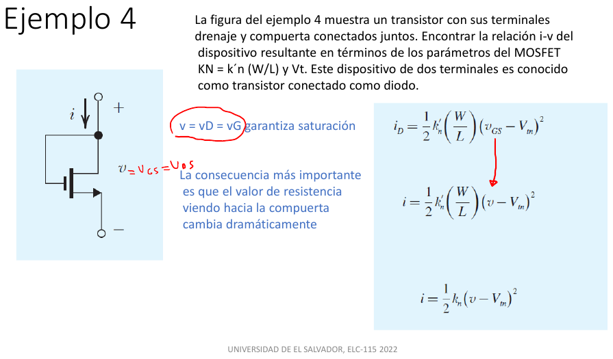
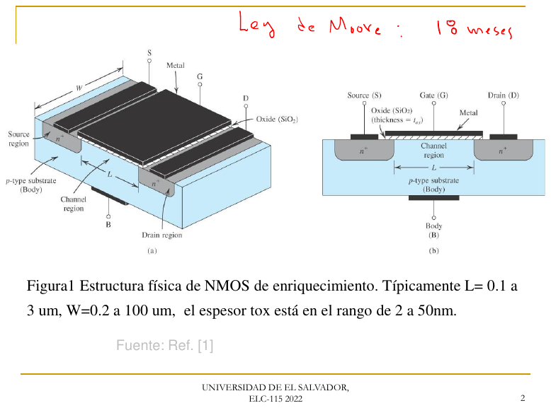
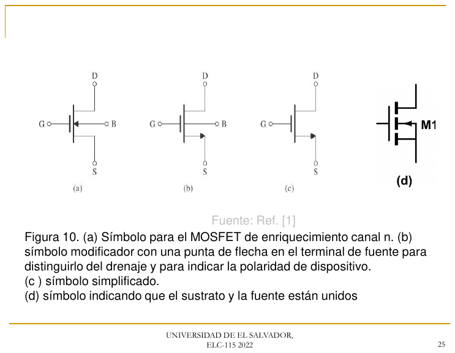
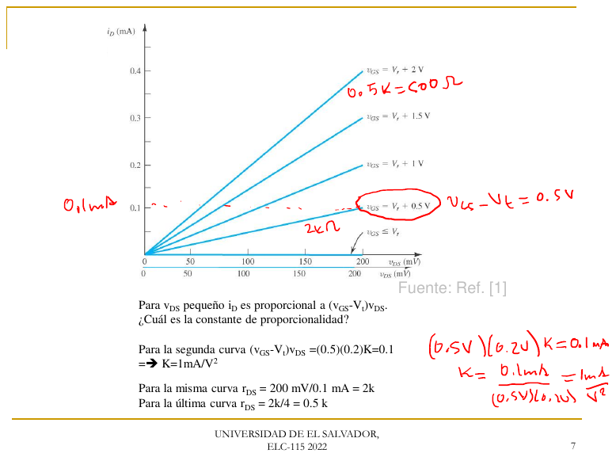
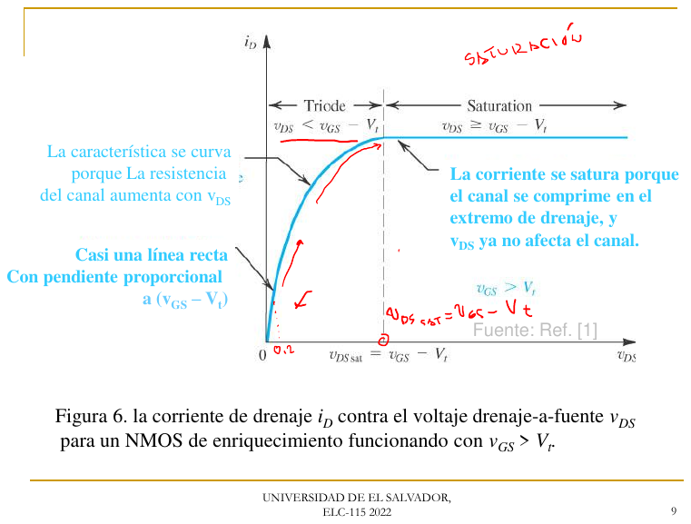
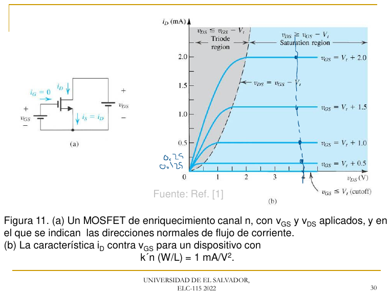
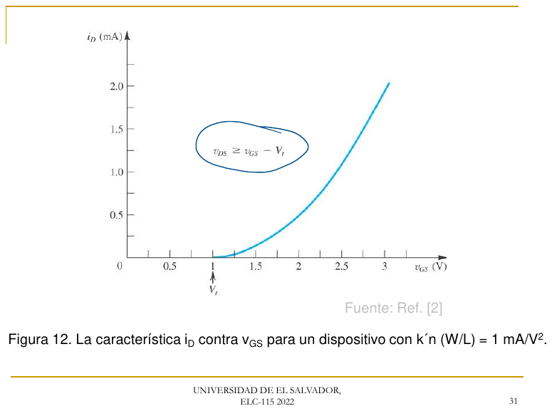
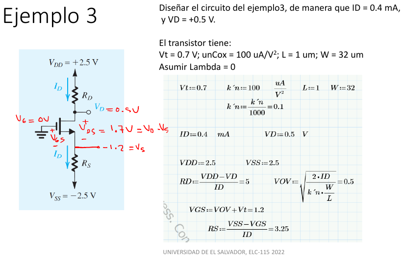
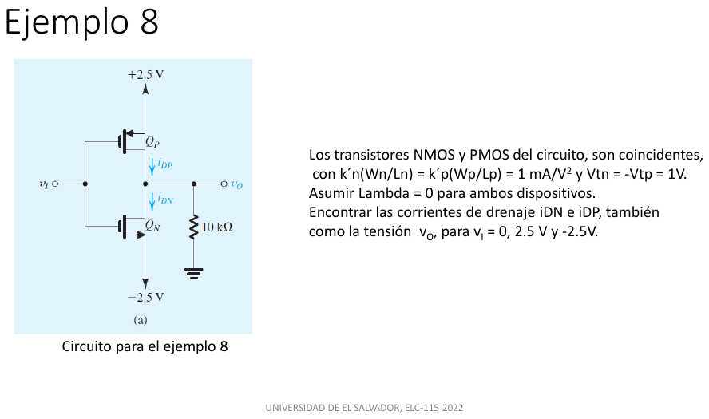

Guía completa, explicada paso a paso · Bloques 7 y 8 del plan · Aparece en todos los parciales desde 2021 y vale entre 20 y 30 %
SÍMBOLOS ASCII DEL MOSFET
NMOS PMOS Resistencias, fuentes y tierra
como en las guías 01 y 02:
D S
| | >
||--+ ||<-+ flecha ENTRA < R (+ V -) GND
G ---|| G ---|| por S = PMOS >
||->+ flecha SALE ||--+
| por S = NMOS |
S D
I_G = 0 siempre: por la compuerta no entra corriente (está aislada por el óxido).
Material: MOSFET´S Lecciones semana 1 · MOSFET con anotaciones · CORRIENTE DE DRENAJE
S (fuente) G (compuerta) D (drenaje)
| | |
| ==================== | metal o polisilicio
| -------------------- | óxido SiO2 (aislante, espesor t_ox)
~~~~~~[ n+ ]~~~~~~~~~~~~~~~~~~~~~~~~~~~~~~~~~~~~~~[ n+ ]~~~~~~
[ ] - - - - - - - - - - - - - - - - - [ ]
[ ] canal n inducido (electrones) [ ]
|<------------- L ------------->|
sustrato tipo p
|
B (cuerpo): al punto MÁS NEGATIVO del circuito
W = ancho del canal (hacia dentro del papel) L = largo del canal
Sin tensión en la compuerta, entre las dos regiones n+ hay sustrato p: son dos diodos espalda con espalda y no pasa corriente. Al aplicar vGS positiva:
v_DS pequeño: canal uniforme v_DS mayor: canal más delgado v_DS = V_OV: estrangulamiento
-> resistencia en el drenaje (triodo) (pinch-off) -> saturación
S [n+]=========================[n+] D S [n+]=============-------[n+] D S [n+]==========------ [n+] D
canal de espesor constante se adelgaza hacia D el canal ya no llega a D:
la corriente deja de crecer
v_GD = v_GS - v_DS es la "fuerza" de la compuerta en el extremo del drenaje:
el canal existe en el drenaje mientras v_GD > V_t (triodo)
se estrangula cuando v_GD = V_t <=> v_DS = V_OV
Figuras de clase



| Región | Condición | Corriente | Equivale a |
|---|---|---|---|
| Corte | VGS ≤ Vt | ID = 0 | Interruptor abierto |
| Triodo | VGS > Vt y VDS < VOV (⇔ VGD > Vt) | ID = KN[VOVVDS − ½VDS²] | Resistencia (≈ 1/(KNVOV) si VDS es pequeño) |
| Saturación | VGS > Vt y VDS ≥ VOV (⇔ VGD ≤ Vt) | ID = ½KNVOV²·(1 + λVDS) | Fuente de corriente controlada por VGS |
^ i_D (mA)
|
4.5 +- - - - - - - - - - - - - -*********************************** V_GS = 4 V -> 4.5 mA
| ****** ..
| *** .
| *** ..
| ** .
| ** ..
| ** ..
2 +- - - -** - -************************************************* V_GS = 3 V -> 2 mA
| ** **** ..
| * *** ..
| *** ....
0.5 +-************************************************************* V_GS = 2 V -> 0.5 mA
0 +***....-------------------------------------------------------
1 2 3 6 V v_DS
K_N = 1 mA/V^2, V_t = 1 V. .... frontera triodo/saturación: i_D = (1/2) K_N v_DS^2 (v_DS = V_OV)
Izquierda de la frontera: TRIODO (curvas que suben). Derecha: SATURACIÓN (curvas planas).
^ i_D (mA), saturación
4.5 + *
| **
| **
| ***
| ***
2 + ***
| ***
| ****
0.5 + ******
0 +*********************---------------------------
V_t=1 2 3 4 V v_GS
Parábola que despega en V_t: i_D = (1/2) K_N (v_GS - V_t)^2. En corte (v_GS < V_t) i_D = 0.
Funciona igual con todas las polaridades invertidas. Para no confundirse, se usan tensiones "positivas al revés":
| Región | Condición (PMOS) | Corriente (de S a D) |
|---|---|---|
| Corte | VSG ≤ |Vt| | 0 |
| Triodo | VSD < VSG − |Vt| | KP[(VSG − |Vt|)VSD − ½VSD²] |
| Saturación | VSD ≥ VSG − |Vt| | ½KP(VSG − |Vt|)² |
En saturación la corriente sube un poco con VDS: ID = ½KNVOV²(1 + λVDS), con VA = 1/λ y resistencia de salida ro = VA/ID. Si el problema no lo menciona, λ = 0.
CD4007 típico (tabla del parcial 2023R): KN = 1.1 mA/V², KP = 0.7 mA/V², |Vt| = 1.4 V y VA = 20 V. En 2024, la curva de LTspice dio Vt = 1.16 V y KN = 0.90 mA/V².
Figuras de clase



Técnica: cociente de dos ecuaciones de saturación (se cancela KN).
¿Se redibuja? No.
Resultado: Vt = (r·VGS2 − VGS1)/(r − 1). Descarta cualquier Vt mayor que uno de los VGS (ese punto estaría en corte).
Técnica: deducción anterior.
¿Se redibuja? No.
Resultado: r = 2 (punto 1: 3.2 V y 2.0 mA; punto 2: 2.2 V y 0.5 mA)
Técnica: fórmulas de la deducción.
¿Se redibuja? No.
Resultado: Vt = 1.2 V y KN = 1.0 mA/V². Comprobación: ½·1·(2.2 − 1.2)² = 0.5 mA ✓.
Figuras

VDD = +2.5 V, VSS = −2.5 V, compuerta a tierra. Vt = 0.7 V, k′n = 100 µA/V², W/L = 32 µm/1 µm, λ = 0. Halle RD y RS.

+2.5 V (V_DD)
|
>
< R_D I_D = 0.4 mA
>
|
+--------o V_D = +0.5 V
|
||--+
GND -------|| V_G = 0 V
||->+
|
+--------o V_S
|
>
< R_S
>
|
-2.5 V (V_SS)Técnica: definición de la convención del profesor, KN = k′n(W/L).
¿Se redibuja? No.
Resultado: KN = 3.2 mA/V²
Técnica: Ley de Ohm en RD (toda ID pasa por ella).
¿Se redibuja? No.
Resultado: RD = 5 kΩ
Técnica: ecuación de saturación despejada para VOV.
¿Se redibuja? No.
Resultado: VGS = 1.2 V, así que VS = VG − VGS = −1.2 V.
Técnica: Ley de Ohm en RS.
¿Se redibuja? No.
Resultado: RS = 3.25 kΩ
Técnica: condición de saturación VDS ≥ VOV.
¿Se redibuja? No.
Resultado: saturación confirmada. Diseño: RD = 5 kΩ, RS = 3.25 kΩ.
VDD = 12 V, R1 = 2 MΩ, R2 = 1 MΩ, RD = 3 kΩ, RS = 1 kΩ, KN = 2 mA/V², Vt = 1 V. Halle ID, VGS y VDS.
V_DD = 12 V
|
+------+------+
| |
> >
< R_1 2M < R_D 3k
> >
| |
| +------o V_D
| |
| ||--+
+---------||
| V_G ||->+
| |
> +------o V_S
< R_2 1M >
> < R_S 1k
| >
| |
GND GND
Técnica: divisor de tensión (válido porque IG = 0).
¿Se redibuja? Sí. La compuerta es un circuito abierto: R1 y R2 quedan en serie, solas.
12 V --/\/\/--+--/\/\/-- GND
2 M V_G 1 M (la compuerta no toma corriente)
Resultado: VG = 4 V
Técnica: LVK en la malla G–S–RS–tierra + ecuación de saturación.
¿Se redibuja? Sí. El MOSFET en saturación → fuente de corriente ID = ½KN(VGS − Vt)² entre D y S; la compuerta queda abierta.
V_G = 4 V
o G (sin corriente)
|
| V_GS LVK: V_G = V_GS + I_D R_S
|
+---- S
|
>
< R_S = 1 k <- por aquí pasa I_D
>
|
GND
Resultado: VOV = 1.303 V, VGS = 2.303 V, ID = u² = 1.697 mA
Técnica: Ley de Ohm en RD y RS.
¿Se redibuja? No.
Resultado: VDS = 5.21 V
Técnica: VDS ≥ VOV.
¿Se redibuja? No.
Resultado final: ID = 1.70 mA, VGS = 2.30 V, VDS = 5.21 V, saturación. Forma del profesor: 1·x² + √(2/2)·x + (1 − 4) = 0 → x = 1.303 → ID = x² = 1.697 mA, igual.
Fuente a tierra, VGS = 3 V fijo, RD = 5 kΩ, VDD = 10 V, KN = 2 mA/V², Vt = 1 V.
V_DD = 10 V
|
>
< R_D = 5 k
>
|
+-----o V_D
|
||--+
3 V ----||
||->+
|
GND
Técnica: ecuación de saturación + Ley de Ohm en RD.
¿Se redibuja? Sí. MOSFET → fuente de corriente ID = ½KNVOV².
Resultado: VDS = −10 V < VOV = 2 V → contradicción: la suposición es falsa.
Técnica: ecuación de triodo igualada a la Ley de Ohm en RD (cuadrática en VDS).
¿Se redibuja? Sí. MOSFET → resistencia no lineal controlada, ID = KN[VOVVDS − ½VDS²].
Resultado: VDS = 0.548 V, ID = (10 − 0.548)/5 = 1.89 mA, en triodo.
KN = KP = 1 mA/V², Vtn = −Vtp = 1 V, λ = 0. Halle iDN, iDP y vO para vI = 0, +2.5 V y −2.5 V.

+2.5 V
| S
||<-+
+--------|| Q_P
| ||--+
| | D i_DP
v_I o---+ +-----------+--------o v_O
| | D |
| ||--+ >
+--------|| Q_N < 10 k
||->+ >
| S |
-2.5 V GNDTécnica: simetría del circuito + suposición de saturación + LCK en vO.
¿Se redibuja? Sí. QP y QN → fuentes de corriente iguales (misma |VGS| = 2.5 V).
+2.5 V
|
(v i_DP) = 1/2 (1)(2.5-1)^2 = 1.125 mA
|
+------+------o v_O = 0 LCK: i_DP = i_DN + v_O/10k
| |
(v i_DN) > 10 k con i_DP = i_DN -> v_O = 0
| |
-2.5 V GND
Resultado: iDN = iDP = 1.125 mA, vO = 0 V.
Técnica: condición de corte (VSG ≤ |Vt|) + suposición de triodo + LCK.
¿Se redibuja? Sí. QP (VSG = 0, corte) → abierto. QN (VGS = 5 V) → probar saturación: daría 8 mA y vO = −80 V, imposible → triodo.
Q_P abierto
o
o
+------+------o v_O i_DN = (0 - v_O)/10k (sube desde GND por R)
| |
[Q_N > 10 k triodo: i_DN = K_N [ 4 V_DS - (1/2) V_DS^2 ]
triodo] | V_DS = v_O + 2.5
| |
-2.5 V GND
Resultado: vO = −2.44 V, iDN = 0.244 mA, iDP = 0.
Técnica: simetría con el paso 2.
¿Se redibuja? Sí. QN (VGS = 0) → abierto; QP → triodo.
Resultado: vO = +2.44 V, iDP = 0.244 mA, iDN = 0.
Figuras


Circuito típico: la fuente del NMOS va a una señal VIN, la compuerta a VG fijo y el drenaje a VDD por RD. Como VGS = VG − VIN, al subir VIN baja la corriente.
V_DD
|
>
< R_D
>
|
+-----o V_D (= V_out)
|
||--+
V_G -------||
||->+
|
+-----o S = V_IN
|
(~ V_IN) señal que se barre
|
GND
V_IN: pequeño ---------------------------------------------------> grande
| TRIODO | SATURACIÓN | CORTE |
I_D grande, V_D = V_G - V_t en la V_GS = V_t en la
V_D muy bajo frontera triodo/sat frontera sat/corte
| Pregunta típica | Condición | Fórmula |
|---|---|---|
| VG mínimo para no entrar en corte con ningún VIN | VGS > Vt con el VIN más alto | VG,min = VIN,max + Vt |
| VDD mínimo para estar siempre en saturación | VD ≥ VG − Vt con la corriente más alta (VIN,min) | VDD,min = VG − Vt + ID,maxRD |
| Frontera saturación/triodo al barrer Vi | VD = VG − Vt | ID = (VDD − VD)/RD → VGS = Vt + √(2ID/KN) → Vi = VG − VGS |
| Frontera saturación/corte | VGS = Vt | Vi = VG − Vt |
Resueltos paso a paso en la guía 04: problema 2 (2024 P4 = 2014 P5) y problema 5 (2021 P5).
Figuras


o + v = v_GS = v_DS
| | i
| v
+------+ D
| |
| ||--+ Como v_DS = v_GS > v_GS - V_t = V_OV,
+--|| SIEMPRE está en saturación (si conduce):
||->+
| S i = (1/2) K_N (v - V_t)^2
o -Es un "diodo" de dos terminales cuya curva es una parábola que arranca en Vt. Una resistencia grande entre G y D (sin corriente de compuerta) produce el mismo efecto: VG = VD.
V_DD V_DD
| |
> >
< R (fija I_REF) < R_D (carga)
> >
| I_REF | I_O
+--------+ +------o V_O
| | |
||--+ | ||--+
+----|| | +----|| Q2
| ||->+ | Q1 (diodo) | ||->+
| | | | |
+--------)--------+-----------------+ |
| (compuertas unidas, mismo V_GS)|
GND GND
Q1 está conectado como diodo: V_GS1 queda fijado por I_REF.
Q2 tiene el MISMO V_GS -> si Q2 está en saturación, I_O = I_REF (transistores iguales).
Figura

| Concepto | Fórmula |
|---|---|
| Parámetro | KN = k′n(W/L) = μnCox(W/L) |
| Sobrexcitación | VOV = VGS − Vt |
| Saturación | ID = ½KNVOV² · VDS ≥ VOV (⇔ VD ≥ VG − Vt) |
| Triodo | ID = KN(VOVVDS − ½VDS²) · VDS < VOV |
| Resistencia del canal | rDS = 1/(KNVOV) |
| VGS desde ID | VGS = Vt + √(2ID/KN) |
| Dos puntos | r = √(I1/I2) · Vt = (rVGS2 − VGS1)/(r − 1) · KN = 2I1/(VGS1 − Vt)² |
| Forma del profesor con RS | RSx² + √(2/KN)x + (Vt − VG) = 0, x = √ID |
| PMOS | ID = ½KP(VSG − |Vt|)² · VSD ≥ VSG − |Vt| |
| Resistencia de salida | ro = VA/ID, VA = 1/λ |